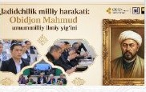

«Jadidlar: milliy o'zlik, istiqlol va davlatchilik g'oyalari» xalqaro anjumani
Turkiya, Ozarbayjon, AQSh, Germaniya, Yaponiya va boshqa 30 dan ortiq davlat olimlari ishtirok etgan nufuzli global ilmiy forum.
Xalqaro forum

«Mahmudxo'ja Behbudiy merosi va zamonaviylik» simpoziumi
Allomaning 150 yillik yubileyiga bag'ishlangan, xalqaro turkologlar va madaniyatshunoslar ishtirokidagi anjuman.
Simpozium
 Konferensiya
Konferensiya
Markaziy Osiyo jadidchilik harakati: Yangi ilmiy tadqiqotlar
Turkiya, Qozog'iston, Ozarbayjon va O'zbekiston olimlari ishtirokidagi xalqaro simpozium.
Ishtirok etish
Yig'in
Repressiya qurbonlari xotirasi: Jadidlar fojiasi va saboqlari
Qatag'on qurbonlari xotirasiga bag'ishlangan respublika ilmiy-amaliy anjumani.
Batafsil Anjuman
Anjuman
Jadid maktablari va ta'lim tizimi islohoti: Kecha va bugun
Pedagogika fani vakillari va o'qituvchilar ishtirokidagi respublika forumi.
Ishtirok etish
PlenumTarixchilar milliy assotsiatsiyasining yillik hisobot yig'ini
Jadidlar faoliyatiga oid yangi arxiv manbalarini tizimlashtirish rejalari muhokamasi.
Batafsil